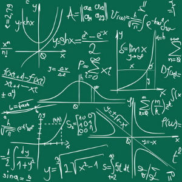
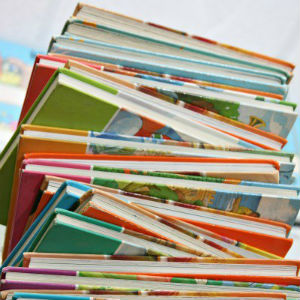
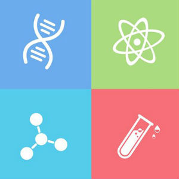

Academics
Main Courses

Math
Being one of the four main courses at Sitka math is very important. We have many math classes including alegbra one and two, geometry, calculus, and statitics. We also offer scholarships for those with excellent math abilities.
English
Being one of the four main courses at Sitka english is very important. We have many english classes including english one,two,three, and four, literature, language, and creative writing. We have many different clubs and scholarship opprotunities for people of all interests in our english department.


Science
Being one of the four main courses at Sitka science is very important. We have many science classes including biology, chemistry, earth science, physics, and marine biology. Our science department is very involved in the community and focus on numerous actions in order to better the environment.
Social Studies
Being one of the four main courses at Sitka social studies are very important. We have many social studies classes including geography, human geography, european history, united states history, government, and economics. Our social studies program services many trips around the world in order to learn the history of the world.